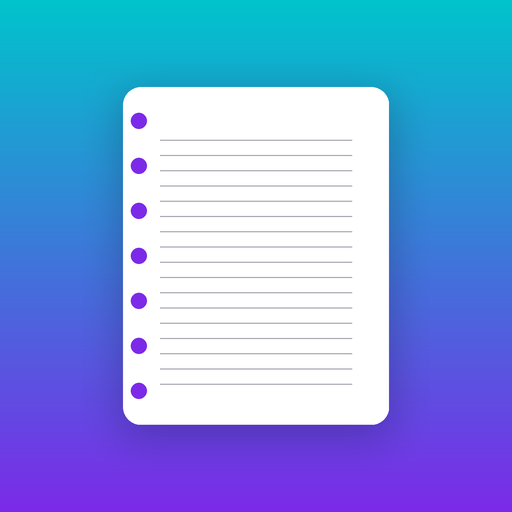

Notebook MakerNotebook pages for print books, made in Canva
Notebook Maker is a Canva app that adds lined, dotted, grid, or blank interior pages to your design, sized for Amazon Kindle Direct Publishing paperbacks. Margins follow the book's page count, and a built-in check finds text or images outside the print-safe area.
How it works
- Create a Canva design at your book size, for example 6 x 9 in.
- Open Notebook Maker from the Apps panel.
- Choose the finished number of pages and a page style, then select Add pages.
- Select Check my design before exporting a print PDF.